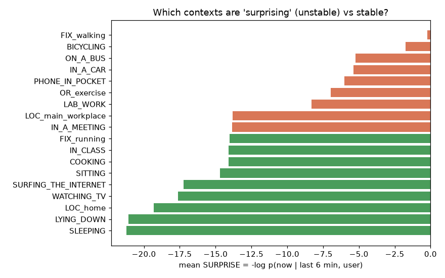
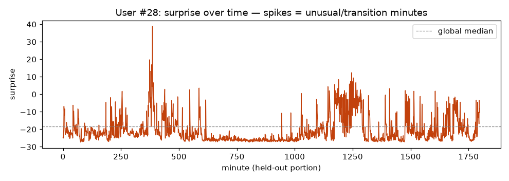

V3 逐次サプライズ → 割り込み可否
p(今の行動 | 直近6分, user)。予想外の瞬間ほど高サプライズ＝いま話しかけてよいかの手がかり。
-15.116held-out NLL
FIX_walking最も驚く文脈
SLEEPING最も安定な文脈
376696系列数
1. このデータは何か
ExtraSensory（60人）。加速度magnitudeの6統計量を1分ごとの行動ベクトルとし、各時刻の直近6分を履歴として与える。文脈ラベル（会議中/授業中/在宅/歩行…）は評価に使用。
2. 何を・どう学習したか
GRU で直近6分を要約し、条件付き NSF で p(今の行動 | 履歴, user) を学習。SURPRISE = −log p は『直前までの流れから見て、今この瞬間がどれだけ意外か』。ベースは行動が滑らかに続くほど低く、切り替わり/異常な瞬間ほど高い。
3. 結果
held-out NLL -15.12。文脈別の平均サプライズを見ると、『SLEEPING』のような安定状態は低く、『FIX_walking』のような状態は高い傾向。個人の時系列ではサプライズがスパイクする瞬間＝行動の切り替わりに対応。

文脈別の平均サプライズ（緑=安定/低・橙=不安定/高）。

あるユーザの held-out 区間のサプライズ時系列。山=意外な瞬間。
4. 図の見方
横棒：右にあるほど『その文脈は直近履歴から予測しづらい＝不安定/移行的』。座って在宅など定常的な状態は左（低サプライズ）に来やすい。
時系列：破線=全体中央値。山＝直前の流れから外れた瞬間（活動の切替や異常）。
5. 解釈と意味・使い道
示すこと：逐次NFのサプライズは『行動の切り替わり/不安定な瞬間』を連続量で捉えられる。
なぜNFか：離散の遷移確率(マルコフ)と違い、連続センサの結合分布で『今の1分の意外さ』を較正された尤度として出せる。
使い道：割り込みタイミング（低サプライズ＝安定＝話しかけ/通知してよい、高サプライズ＝移行中/取り込み中＝避ける）、行動セグメンテーション、異常行動の早期検知。
正直な限界：ExtraSensoryの分は必ずしも連続でなく履歴に隙間があり得る。会議/授業の『割り込むべきでなさ』は本来は意味ラベルも要る（ここでは近似）。
条件付き Normalizing Flow（zuko NSF）で自動生成。
NF×生活データ探索シリーズの一部。